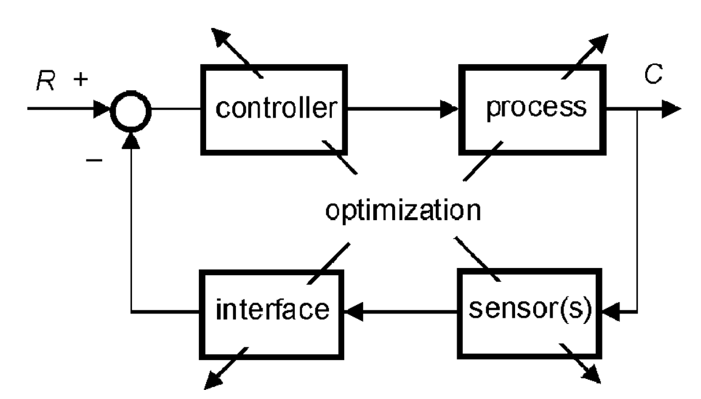

<style> .reveal section img { background:none; border:none; box-shadow:none; } #left { margin: 10px 0 15px 20px; text-align: center; float: left; z-index:-10; width:48%; font-size: 0.85em; line-height: 1.5; } #right { margin: 10px 0 15px 0; float: right; text-align: center; z-index:-10; width:48%; font-size: 0.85em; line-height: 1.5; } </style> # Unidad 3: Sistemas de Control <span style="font-size: 20.0pt; "> **Profesor:** Ing. Israel Chaves Arbaiza </span> <span style="font-size: 20.0pt;"> **Curso**: Mecatrónica </span> <img width="900" height="130" src="media/logo_slides.jpg"> --- ## Objetivos de la clase <span style="font-size: 22.0pt; "> * Entender la importancia del control en la mecatrónica * Cómo modelar sistemas * Aprender a análizar las respuestas de los sistemas * Conocer métodos y tipos de control * Comentar los principios de optimización </span> Note: Prueba de notas para el speaker --- ## Control en la mecatrónica <span style="font-size: 22.0pt; "> </span> --- ## Control en la mecatrónica <span style="font-size: 22.0pt; "> * Típicamente, el sistema de control consta del sistema computacional que da órdenes a los actuadores * En **Control Automático**, se conoce como *función de costo*, a la función que describe el rendimiento del sistema * Por ejemplo, medición del error, de la potencia consumida, desviación de un valor de referencia, etc. * Formalmente, el control debe diseñarse de manera que se cumpla el proceso deseado, minimizando la función de costo. </span> --- ## Control en la mecatrónica <span style="font-size: 22.0pt; "> Para mejorar/diseñar un buen sistema, idealmente, se debe **optimizar** cada etapa del sistema, de manera que al unir las partes, luego de algunos ajustes. se cuenta con un subsistema optimizado.  </span> --- ## Control en la mecatrónica <span style="font-size: 22.0pt; "> * Una diferencia principal entre el *control típico* y el **control para mecatrónica**, es **considerar el sistema como un todo** * Se subdividen los sistemas y se optimiza cada uno por separado, de manera que al integrarlo, se obtiene un sistema más optimizado * Para lograrlo, se prefiere que la componente mecánica y el procesamiento de la información (el controlador), se puedan **simular y ajustar simultáneamente** * Un **sistema mecánico simple y de bajo costo**, facilita la implementación de un buen sistema de control, que logre el rendimiento deseado * Algo semejante se aplica a los sensores, cada sensor se puede optimizar aplicándole un filtro para eliminar ruido en las mediciones. Pero si se combinan varios sensores, un filtro de Kalman puede ayudar a trabajar con los datos crudos </span> --- ## Control en la mecatrónica <span style="font-size: 22.0pt; "> Sin embargo, en la práctica, muchas veces no podemos optimizar cada etapa del sistema. Por lo tanto, se optimiza el control (hardware o software) </span> --- ## Modelado de sistemas <span style="font-size: 22.0pt; "> **Modelar** un sistema, busca representar un sistema real, mediante un sistema más sencillo, fácil de modificar, con el que se puedan realizar múltiples pruebas del comportamiento. </span> --- ## Modelado de sistemas <span style="font-size: 22.0pt; "> * Si el sistema (**o bien subsistema**) varía con el tiempo, y existen las herramientas computacionales para crear un modelo simulable de ese sistema, es posible obtener una respuesta aproximada a la real * Las simulaciones se resuelven por medio de sistemas de ecuaciones diferenciales, con métodos numéricos </span> --- ## Modelado de sistemas <span style="font-size: 22.0pt; "> </span> --- ## Modelado de sistemas <span style="font-size: 22.0pt; "> **Principios del modelado jerárquico** * *Estructurado* * Establecer las relaciones entre los elementos * Deconstruir el sistema, con las relaciones reconocibles * *Descomposción* * Separar en elementos fundamentales * Refinar la estructura, detalles * *Agregación* * Capas de elementos individuales * Subsistemas que conforman un solo sistema </span> --- ## Modelado de sistemas <span style="font-size: 22.0pt; "> </span> --- ## Modelado de sistemas <span style="font-size: 22.0pt; "> **DFD: Diagramas de flujo de datos:** Facilitan la interpretación del sistema, contienen procesos, flujos de datos y espacios de almacenamiento de información </span> --- ## Modelado de sistemas <span style="font-size: 22.0pt; "> **PSPEC: Especificaciones de proceso:** Explican y detallan una función, pueden incluir texto, pseudocódigo, ecuaciones matemáticas, parámetros, etc. </span> --- ## Ejemplo de producto: Autoenfoque para cámara <span style="font-size: 22.0pt; "> **Especificaciones indicadas:** Una cámara con enfoque automático debería ser muy útil, fácil de usar (el usuario objetivo es un novato en fotografía) y tiene la menor cantidad de operadores funciones opcionales y de visualización. Se deben producir imágenes nítidas, sin intervención manual especial (función de enfoque automático estándar de la industria). La cámara debe funcionar con rollos de película estándar (negro y negro). el color blanco). Debería ser posible utilizar baterías recargables estándar. La cámara debe encajar en el mercado de bajo costo, preferiblemente ser liviana, y permitir un tiempo operativo lo más largo posible para cada batería llena cargar. </span> --- ## Ejemplo de producto: Autoenfoque para cámara <span style="font-size: 22.0pt; "> </span> --- ## Ejemplo de producto: Autoenfoque para cámara <span style="font-size: 22.0pt; "> </span> --- ## Ejemplo de producto: Autoenfoque para cámara <span style="font-size: 22.0pt; "> </span> --- ## Ejemplo de producto: Autoenfoque para cámara <span style="font-size: 22.0pt; "> </span> --- ## Paradigmas de modelado para Mecatrónica <span style="font-size: 22.0pt; "> El **objetivo principal de un modelo**, es representar el comportamiento del sistema de forma general, independientemente del dominio en que se trabaje. Usualmente, esto se obtiene simplificando ecuaciones (ecuaciones diferenciales) de modelos físicos fundamentales, en sistemas linealmente invariantes en el tiempo (LTI), a representaciones en el dominio de la frecuenca (funciones de transferencia) </span> --- ## Paradigmas de modelado para Mecatrónica <span style="font-size: 22.0pt; "> * **Modelado basado en energía:** Utiliza funciones de energía, como las *ecuaciones de Lagrange* o de *Hamilton* * **Modelado multipuerto:** Aplican modelos basados en componentes, manteniendo las leyes de conservación de la energía, como *las leyes de Kirchhoff* o los *diagramas de cuerpo libre* De estos, el más utilizado en ingeniería, es el método multipuerto. </span> --- ## Paradigmas de modelado para Mecatrónica --- ## Control en la Mecatrónica <span style="font-size: 22.0pt; "> El control automático, aplicado en sistemas mecatrónicos, debe cumplir con 3 aspectos: * **Estabilidad y robustez**, en presencia de incertidumbres y variaciones * **Rechazo de perturbaciones** y de valores de entradas indeseables * **Enfoque en el movimiento deseado** </span> --- ## Métodos y tipos de control <span style="font-size: 22.0pt; "> Existen distintos tipos de control automático, pero en la industria, el más utilizado es el: **Control PID:** En un control a lazo cerrado, se mide el error entre un valor deseado y la salida del sistema. El control PID busca corregir y minimizar ese error. Para ello, utiliza 3 parámetros: **P (proporcional)**, ejecuta la acción para corregir el error, proporcionalmente al error, entre más grande sea, más grande P. **I (integral)**, considera el tiempo que ha permanecido presente el error. Entre más tiempo lleve el error presente en el sistema, más grande será I. Y por último, **D (derivativo)**, relacionado al cambio del error en el tiempo, es decir, entre más rápido cambie el error, mayor será D. </span> --- ## PID <span style="font-size: 22.0pt; "> <img width="700" height="300" src="media/pid.png"> </span> --- ## PID <span style="font-size: 22.0pt; "> <img width="700" height="300" src="media/horno.jpg"> </span> --- ## PID <span style="font-size: 22.0pt; "> </span> --- ## Diseño de PID <span style="font-size: 22.0pt; "> Para diseñar un control PID, se debe aplicar el modelado antes explicado; y se pueden utilizar las herramientas de software como **MATLAB** para diseñar de forma sencilla un PID que pueda brindar un control simple del sistema. Se recomienda revisar la siguiente [tabla](https://www.mathworks.com/help/control/getstart/choosing-a-pid-controller-design-tool.html) , que indica cuándo seleccionar las diferentes herramientas de **MATLAB** para diseñar un PID </span> --- ## Diseño de PID <span style="font-size: 22.0pt; "> Como ejemplo, revisar el caso de un **Control de temperatura en un intercambiador de calor** [en este enlace](https://www.mathworks.com/help/control/ug/temperature-control-in-a-heat-exchanger.html) </span>